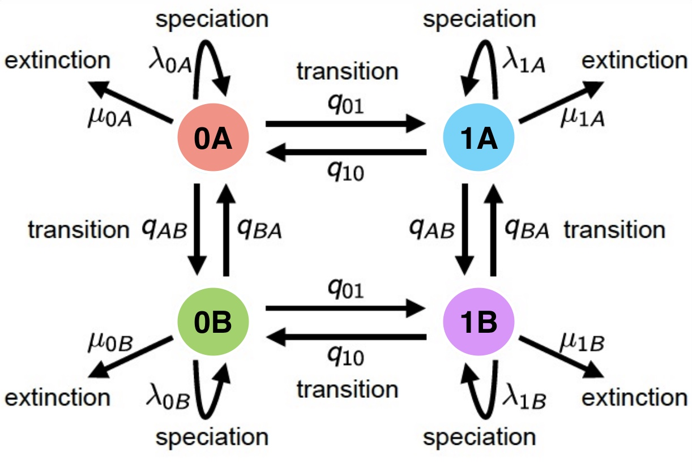
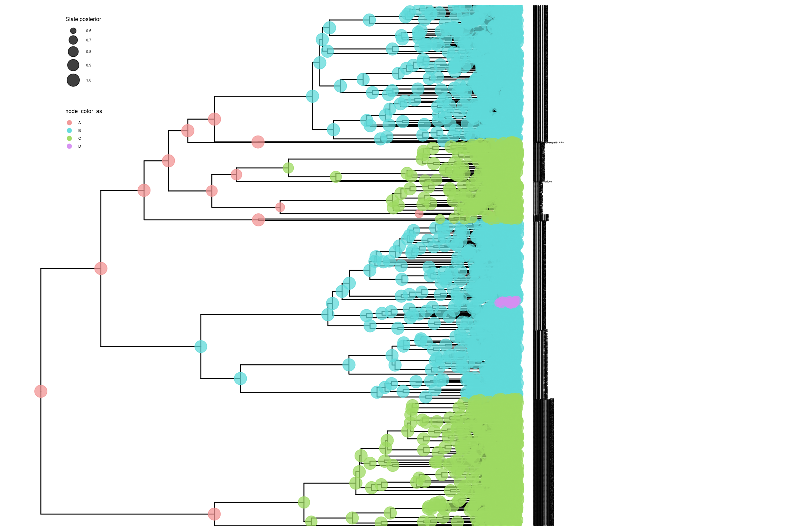
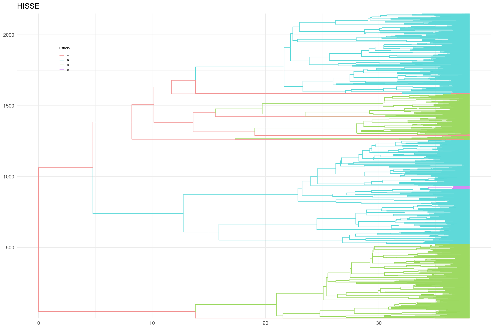
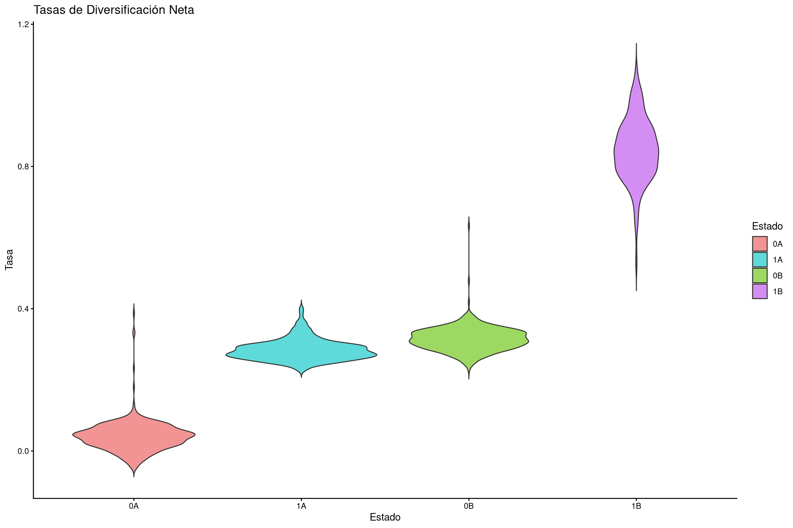
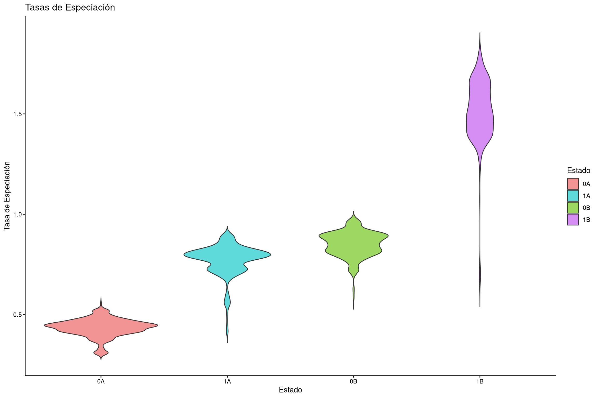

Haz clic en la imagen para ver el PDF de la presentación
Modelo de diversificación con estados escondidos (HISSE)
Uno de los descubrimientos más importantes en el campo de los modelos de diversificación dependientes de estado (SSE) fue hecho por Rabosky y Goldberg (2015). Estos autores encontraron, que BiSSE generaba un elevado error tipo I. En estadística este error se refiere a rechazar la hipótesis nula cuando en general la hipótesis es verdadera.
Modelo HiSSE con dos estados y asociando a dos estados escondidos

Si tenemos dos estados 0 y 1, estos se convierten ahora en cuatro estados 0A, 0B, 1A, 1B.
Para cada uno de los estados definimos una nueva tasa de especiación \(\lambda_{0A}\), \(\lambda_{0B}\), \(\lambda_{1A}\) y \(\lambda_{1B}\).
Para cada uno de los estados definimos una nueva tasa de extinción \(\mu_{0A}\), \(\mu_{0B}\), \(\mu_{1A}\) y \(\mu_{1B}\).
La matriz Q muestra cómo los estados observables y ocultos interactúan, ayudando a inferir cómo los cambios de carácter afectan la especiación y extinción.
Simulación bajo el modelo HiSSE
El siguiente script simula un proceso bajo el modelo HiSSE (Hidden State Speciation and Extinction). En este caso se consideran dos estados observados (0 y 1) asociados con dos estados ocultos (A y B), generando cuatro combinaciones posibles:
0A
0B
1A
1B
📥 Puedes descargar el script en el siguiente enlace:
Crea un script .Rev y copia el codigo de la siguiente sección:
# ============================================================# HiSSE en RevBayes# Character-Dependent Birth-Death Process con estados ocultos# ============================================================# ------------------------------------------------------------# 1. LECTURA DEL ÁRBOL Y DE LOS DATOS DE CARACTERES# ------------------------------------------------------------# Leer el árbol filogenético.# readTrees() devuelve un vector de árboles, por eso se selecciona [1].T<- readTrees("datos/hisse/ConLyttini.tre")[1]# Leer la matriz de caracteres observados.# En este ejemplo se asume un carácter binario con estados 0 y 1.datos<- readCharacterData("datos/hisse/Traits_conLyttini_01.nex")# ------------------------------------------------------------# 2. PARÁMETROS GENERALES DEL MODELO# ------------------------------------------------------------# Número total aproximado de especies del grupo.# Este valor se usa posteriormente para calcular la fracción de muestreo.NUM_TOTAL_SPECIES = 3000.0# Número de estados observados del carácter.# Por ejemplo:# 0 = ausencia del carácter# 1 = presencia del carácterNUM_STATES = 2# Número de estados ocultos.# En este caso:# A y BNUM_HIDDEN = 2# Número total de categorías del modelo HiSSE.## Estados observados:# 0# 1## Estados ocultos:# A# B## Combinaciones:# 0A# 1A# 0B# 1B## Por tanto:# NUM_RATES = 2 x 2 = 4NUM_RATES = NUM_STATES * NUM_HIDDEN# Parámetro que controla la escala del prior jerárquico# asociado a las diferencias entre estados ocultos.H = 0.587405# ------------------------------------------------------------# 3. EXPANSIÓN DE LOS DATOS PARA INCLUIR ESTADOS OCULTOS# ------------------------------------------------------------# Los datos originales contienen únicamente los estados# observados 0 y 1.## HiSSE introduce estados ocultos que no se observan# directamente en las puntas.## expandCharacters() expande el espacio de estados para permitir# combinaciones como:## 0A# 1A# 0B# 1B## Los estados ocultos quedan como desconocidos en las puntas# y serán inferidos por el modelo.data_exp<- datos.expandCharacters(NUM_HIDDEN)# ------------------------------------------------------------# 4. VECTORES PARA MOVIMIENTOS Y MONITORES# ------------------------------------------------------------# Vector donde se almacenarán los movimientos MCMC.moves = VectorMoves()# Vector donde se almacenarán los monitores.monitors = VectorMonitors()# ------------------------------------------------------------# 5. INFORMACIÓN BÁSICA DEL ÁRBOL# ------------------------------------------------------------# Obtener los taxones presentes en el árbol.taxa<- T.taxa()# Longitud total del árbol:# suma de todas las longitudes de rama.tree_length<- T.treeLength()# Valor inicial aproximado para una tasa de diversificación.## Esta cantidad no se utiliza directamente como prior,# pero sirve como referencia y posteriormente como valor inicial.rate_mean<- (NUM_TOTAL_SPECIES- 2)/ tree_length# ------------------------------------------------------------# 6. COMPONENTE DE ESTADOS OCULTOS PARA LAS TASAS# ------------------------------------------------------------# El modelo separa las tasas en dos componentes:## tasa final =# componente del estado observado# x# componente del estado oculto## Por ejemplo:## λ_0A = λ_0 * h_A# λ_0B = λ_0 * h_B## Esto permite que los estados ocultos modifiquen las tasas# de especiación y extinción.# Media en escala logarítmica de la distribución lognormal# de los multiplicadores asociados a estados ocultos.## ln(1) = 0## Por tanto, antes de la normalización, los multiplicadores# están centrados alrededor de 1.ln_speciation_hidden_mean<- ln(1.0)ln_extinction_hidden_mean<- ln(1.0)# ------------------------------------------------------------# 7. VARIACIÓN ENTRE ESTADOS OCULTOS# ------------------------------------------------------------# Desviación estándar de los multiplicadores de especiación# entre los estados ocultos.## Se asigna un prior exponencial.speciation_hidden_sd ~ dnExponential(1.0 / H)# Desviación estándar equivalente para extinción.extinction_hidden_sd ~ dnExponential(1.0 / H)# Movimientos MCMC para estos parámetros.moves.append(mvScale(speciation_hidden_sd,lambda=1,tune=true,weight=2.0))moves.append(mvScale(extinction_hidden_sd,lambda=1,tune=true,weight=2.0))# ------------------------------------------------------------# 8. CONSTRUCCIÓN DE MULTIPLICADORES PARA ESTADOS OCULTOS# ------------------------------------------------------------# Se discretiza una distribución lognormal en NUM_HIDDEN categorías.## Con dos estados ocultos, se generan dos multiplicadores:## h_A# h_B## para especiación.speciation_hidden_unormalized :=fnDiscretizeDistribution(dnLognormal(ln_speciation_hidden_mean,speciation_hidden_sd),NUM_HIDDEN)# Lo mismo para extinción.extinction_hidden_unormalized :=fnDiscretizeDistribution(dnLognormal(ln_extinction_hidden_mean,extinction_hidden_sd),NUM_HIDDEN)# ------------------------------------------------------------# 9. NORMALIZACIÓN DE LOS MULTIPLICADORES OCULTOS# ------------------------------------------------------------# Se dividen los multiplicadores entre su media.## De esta manera:## mean(speciation_hidden) = 1## y## mean(extinction_hidden) = 1## Esto evita que la componente oculta cambie arbitrariamente# la escala global de las tasas.speciation_hidden :=speciation_hidden_unormalized /mean(speciation_hidden_unormalized)extinction_hidden :=extinction_hidden_unormalized /mean(extinction_hidden_unormalized)# ------------------------------------------------------------# 10. TASAS ASOCIADAS AL CARÁCTER OBSERVADO# ------------------------------------------------------------# Se estima una tasa base de especiación y extinción# para cada estado observado.## En un carácter binario:## speciation_observed[1] = λ_0# speciation_observed[2] = λ_1## extinction_observed[1] = μ_0# extinction_observed[2] = μ_1for(i in 1:NUM_STATES){# --------------------------------------------------------# Especiación# --------------------------------------------------------# Prior log-uniforme muy amplio.## Permite explorar tasas entre:## 10^-6 y 10^2speciation_observed[i]~ dnLoguniform(1E-6, 1E2)# Valor inicial de la cadena.## Esto NO modifica el prior.# Solo indica el punto desde donde empieza la MCMC.speciation_observed[i].setValue((NUM_TOTAL_SPECIES- 2)/ tree_length)# Movimiento multiplicativo apropiado para parámetros positivos.moves.append(mvScale(speciation_observed[i],lambda=1.0,tune=true,weight=3.0))# --------------------------------------------------------# Extinción# --------------------------------------------------------# Prior log-uniforme para la tasa de extinción.extinction_observed[i]~ dnLoguniform(1E-6, 1E2)# Inicialmente se fija la tasa de extinción# en una décima parte de la especiación.extinction_observed[i].setValue(speciation_observed[i]/ 10.0)moves.append(mvScale(extinction_observed[i],lambda=1.0,tune=true,weight=3.0))}# ------------------------------------------------------------# 11. COMBINACIÓN DE ESTADOS OBSERVADOS Y OCULTOS# ------------------------------------------------------------# Las tasas finales dependen de:## estado observado# x# estado oculto## Para dos estados observados y dos ocultos:## index 1 = 0A# index 2 = 1A# index 3 = 0B# index 4 = 1Bfor(j in 1:NUM_HIDDEN){for(i in 1:NUM_STATES){# Convertir la combinación (i,j)# en una posición del vector.index = i + (j* NUM_STATES)- NUM_STATES# Tasa de especiación final.speciation[index]:=speciation_observed[i]*speciation_hidden[j]# Tasa de extinción final.extinction[index]:=extinction_observed[i]*extinction_hidden[j]}}# ------------------------------------------------------------# 12. TRANSICIONES ENTRE ESTADOS OBSERVADOS# ------------------------------------------------------------# Parámetro del prior exponencial para las tasas# de transición entre estados observados.rate_pr := T.treeLength()/ 10# Para dos estados observados existen dos posibles transiciones:## 0 -> 1# 1 -> 0## NUM_STATES * (NUM_STATES - 1)## = 2 * 1# = 2for(i in 1:(NUM_STATES*(NUM_STATES- 1))){transition_rates[i]~ dnExp(rate_pr)moves.append(mvScale(transition_rates[i],lambda=0.50,tune=true,weight=3.0))}# ------------------------------------------------------------# 13. TRANSICIÓN ENTRE ESTADOS OCULTOS# ------------------------------------------------------------# Una tasa común controla los cambios entre estados ocultos:## A <-> Bhidden_rate ~ dnExponential(rate_pr)moves.append(mvScale(hidden_rate,lambda=0.5,tune=true,weight=5))# Construir el vector de tasas de transición# entre estados ocultos.## Con dos estados ocultos:## A -> B# B -> A## comparten el mismo valor hidden_rate.for(i in 1:(NUM_HIDDEN*(NUM_HIDDEN- 1))){R[i]:= hidden_rate}# ------------------------------------------------------------# 14. MATRIZ DE TRANSICIÓN HIDDEN-STATE# ------------------------------------------------------------# Construir la matriz de tasas Q combinando:## transition_rates# transiciones entre estados observados## R# transiciones entre estados ocultos## rescaled=false indica que la matriz no se reescala# automáticamente.rate_matrix :=fnHiddenStateRateMatrix(transition_rates,R,rescaled=false)# ------------------------------------------------------------# 15. FRECUENCIAS EN LA RAÍZ# ------------------------------------------------------------# Prior Dirichlet para las probabilidades iniciales# de los cuatro estados posibles en la raíz:## 0A# 1A# 0B# 1B## rep(1, NUM_RATES) genera:## [1,1,1,1]## que corresponde a un Dirichlet simétrico.rate_category_prior ~dnDirichlet(rep(1, NUM_RATES))# Movimientos MCMC sobre el simplex.moves.append(mvBetaSimplex(rate_category_prior,tune=true,weight=2))moves.append(mvDirichletSimplex(rate_category_prior,tune=true,weight=2))# ------------------------------------------------------------# 16. EDAD DE LA RAÍZ# ------------------------------------------------------------# Obtener la edad de la raíz del árbol observado.root<- T.rootAge()# ------------------------------------------------------------# 17. FRACCIÓN DE MUESTREO# ------------------------------------------------------------# rho representa la proporción de especies existentes# incluidas en el árbol.## Por ejemplo, si:## árbol = 300 especies# total esperado = 3000 especies## rho = 300 / 3000 = 0.10## es decir, se ha muestreado aproximadamente el 10 %.rho<- T.ntips()/ 3000.0# ------------------------------------------------------------# 18. PROCESO DE NACIMIENTO-MUERTE DEPENDIENTE DEL ESTADO# ------------------------------------------------------------# Esta es la parte central del modelo HiSSE.## dnCDBDP =# Character-Dependent Birth-Death Process## El proceso utiliza:## speciationRates# tasas de especiación de los estados 0A,1A,0B,1B## extinctionRates# tasas de extinción correspondientes## Q# matriz de transición entre estados## pi# probabilidades de los estados en la raíz## rho# fracción de muestreo## condition="survival"# condiciona el proceso a que el linaje haya sobrevivido# hasta el presente.timetree ~ dnCDBDP(rootAge = root,speciationRates = speciation,extinctionRates = extinction,Q = rate_matrix,delta = 1.0,pi = rate_category_prior,rho = rho,condition = "survival")# ------------------------------------------------------------# 19. CONDICIONAR EL MODELO AL ÁRBOL OBSERVADO# ------------------------------------------------------------# El árbol no se estima:# se fija al árbol filogenético observado.timetree.clamp(T)# ------------------------------------------------------------# 20. CONDICIONAR EL MODELO A LOS CARACTERES OBSERVADOS# ------------------------------------------------------------# Asociar los estados observados de las especies# al proceso de nacimiento-muerte.timetree.clampCharData(data_exp)# ------------------------------------------------------------# 21. CONSTRUIR EL MODELO# ------------------------------------------------------------# Construir el grafo probabilístico completo.mymodel = model(rate_matrix)# ------------------------------------------------------------# 22. MONITOR PRINCIPAL# ------------------------------------------------------------# Guardar en archivo los parámetros del modelo.## printgen=1 significa que se guarda cada generación.monitors.append(mnModel(filename="salida/hisse/mitos_HiSSE_clyttini_TUTscript.log",printgen=1))# ------------------------------------------------------------# 23. RECONSTRUCCIÓN DE ESTADOS ANCESTRALES# ------------------------------------------------------------# Guardar muestras de los estados ancestrales# condicionados al árbol y al modelo HiSSE.## type="NaturalNumbers"# indica que los estados se almacenan como números enteros.## withTips=true# incluye también los estados de las puntas.## withStartStates=false# no incluye los estados al inicio de cada rama.monitors.append(mnJointConditionalAncestralState(tree=timetree,cdbdp=timetree,type="NaturalNumbers",printgen=1,withTips=true,withStartStates=false,filename="salida/hisse/anc_states_mitos_HiSSE_clyttini_TUTscript.log"))# ------------------------------------------------------------# 24. MAPEO ESTOCÁSTICO DE CARACTERES# ------------------------------------------------------------# Generar historias completas de cambio de estado# a lo largo de las ramas.## A diferencia de una reconstrucción nodal,# el stochastic character mapping permite inferir:## - dónde ocurrió un cambio# - cuándo ocurrió# - cuántos cambios ocurrieron# - qué estados ocuparon cada segmento de rama## include_simmap=true# guarda el resultado en formato SIMMAP.monitors.append(mnStochasticCharacterMap(cdbdp=timetree,printgen=10,filename="salida/hisse/stoch_char_map_mitos_HiSSE_clyttini_TUTscript.log",include_simmap=true))# ------------------------------------------------------------# 25. MONITOR EN PANTALLA# ------------------------------------------------------------# Mostrar durante la ejecución las tasas asociadas# a los estados observados.## Cada 10 generaciones se imprimen:## λ_0# λ_1# μ_0# μ_1monitors.append(mnScreen(printgen=10,speciation_observed,extinction_observed))# ------------------------------------------------------------# 26. CONFIGURACIÓN DE LA MCMC# ------------------------------------------------------------# Construir la cadena MCMC.## nruns=1# una sola corrida## moveschedule="random"# movimientos seleccionados aleatoriamente## combine="mixed"# configuración utilizada para combinar información# en modelos de este tipo.mymcmc = mcmc(mymodel,monitors,moves,nruns=1,moveschedule="random",combine="mixed")# ------------------------------------------------------------# 27. EJECUTAR LA MCMC# ------------------------------------------------------------# Aquí se usan únicamente 400 generaciones.## Esto puede servir para:## - comprobar que el script funciona# - probar rutas# - revisar monitores# - depurar errores## NO es suficiente para una inferencia final.mymcmc.run(generations=400)# ============================================================# POSTPROCESAMIENTO# ============================================================# ------------------------------------------------------------# 28. LEER LAS MUESTRAS DE ESTADOS ANCESTRALES# ------------------------------------------------------------anc_states2 =readAncestralStateTrace("salida/hisse/anc_states_mitos_HiSSE_clyttini_TUTscript.log")# ------------------------------------------------------------# 29. RESUMIR LOS ESTADOS ANCESTRALES EN UN ÁRBOL# ------------------------------------------------------------# Construir un árbol donde cada nodo recibe el estado# ancestral con mayor probabilidad posterior.## summary_statistic="MAP"## MAP =# Maximum A Posteriori## selecciona el estado con mayor probabilidad posterior# para cada nodo.anc_tree =ancestralStateTree(tree=T,ancestral_state_trace_vector=anc_states2,include_start_states=false,file="salida/hisse/anc_states_mitos_HiSSE_clyttini_TUTscript.tree",burnin=2,summary_statistic="MAP",site=1)# ------------------------------------------------------------# 30. PARÁMETROS PARA EL MAPEO ESTOCÁSTICO# ------------------------------------------------------------# Número de muestras iniciales que se descartan.burnin=10# Número de intervalos utilizados para resumir# probabilidades a lo largo de las ramas.n_time_slices=500# ------------------------------------------------------------# 31. LEER LOS STOCHASTIC CHARACTER MAPS# ------------------------------------------------------------anc_states_SCHM =readAncestralStateTrace("salida/hisse/stoch_char_map_mitos_HiSSE_clyttini_TUTscript.log")# ------------------------------------------------------------# 32. RESUMIR LOS MAPAS ESTOCÁSTICOS# ------------------------------------------------------------# characterMapTree() resume las historias simuladas# de cambio de carácter.## Produce dos archivos:## character_file# árbol con reconstrucciones/mapeos marginales## posterior_file# árbol con probabilidades posteriores asociadas## Esto permite visualizar cómo cambian los estados# a lo largo de las ramas.char_map_tree =characterMapTree(tree=T,ancestral_state_trace_vector=anc_states_SCHM,character_file="salida/hisse/stoch_mitos_HiSSE_clyttini_TUTscriptmarginal_char.tree",posterior_file="salida/hisse/stoch_mitos_HiSSE_clyttini_TUTscriptmarginal_post.tree",burnin=burnin,num_time_slices=n_time_slices)
Visualización en R con RevGadgets
library(RevGadgets)library(ggplot2)library(ggtree)library(grid)# Cargar el archivo de estados ancestraleshisse_file <-paste0("../docs/u1_PatDiv/output/hisse/anc_states_mitos_HiSSE_clyttini_TUTscript.tree")p_anc_hisse <-processAncStates(hisse_file)# Definir paleta de colores personalizadatraitcols <-c("#F29494", "#5FD9D9", "#9DD962", "#D48DF2") # Rojo para estado 0, azul para estado 1# Generar el gráfico con estados ancestralesplot_hisse <-plotAncStatesMAP(p_anc_hisse,tree_layout ="rect",tip_labels_size =1) +# Aplicar la paleta de coloresscale_color_manual(values = traitcols) +scale_fill_manual(values = traitcols) +# Modificar leyenda y otros elementos de ggplot2theme(legend.position =c(0.1, 0.85),legend.key.size =unit(0.3, 'cm'), # Tamaño de la clave de la leyendalegend.title =element_text(size =6), # Tamaño del título de la leyendalegend.text =element_text(size =4)) # Tamaño del texto de la leyenda# Mostrar el gráficoplot_hisse

# Generar el gráfico con ramas coloreadas por estado ancestralplot_hisse_2 <-ggtree(p_anc_hisse, layout ="rectangular", aes(color = anc_state_1)) +scale_color_manual(name ="Estado", values = traitcols) +theme_minimal() +ggtitle("HISSE") +theme(legend.position =c(0.1, 0.85),legend.key.size =unit(0.3, 'cm'), # Tamaño de la clave de la leyendalegend.title =element_text(size =6), # Tamaño del título de la leyendalegend.text =element_text(size =4)) # Tamaño del texto de la leyenda# Mostrar el gráficoplot_hisse_2

Graficar las tasas de diversificación neta
# Leer el archivo de salida de RevBayeshisse <-read.table("../docs/u1_PatDiv/output/hisse/mitos_HiSSE_clyttini_TUTscript.log", header =TRUE)# Definir paleta de colores personalizadatraitcols <-c("#F29494", "#5FD9D9", "#9DD962", "#D48DF2") # Rojo para estado 0, azul para estado 1# Calcular la tasa de diversificación neta: especiación - extinciónnetdiversification_rates <-data.frame(dens =c(hisse$speciation_observed.1.- hisse$extinction_observed.1., hisse$speciation_observed.2.- hisse$extinction_observed.2., hisse$speciation_hidden.1.- hisse$extinction_hidden.1., hisse$speciation_hidden.2.- hisse$extinction_hidden.2.),rate =rep(c("0A", "1A", "0B", "1B"), each =length(hisse$speciation_observed.1.)) )# Convertir la variable de estado en factornetdiversification_rates$rate <-factor(netdiversification_rates$rate, levels =c("0A", "1A", "0B", "1B"))# Crear el gráfico de violín para tasas de diversificación netaviolin_diversification <-ggplot(netdiversification_rates, aes(x = rate, y = dens, fill = rate)) +geom_violin(trim =FALSE) +labs(title ="Tasas de Diversificación Neta", x ="Estado", y ="Tasa") +scale_fill_manual(name ="Estado", values = traitcols) +theme_classic()# Mostrar la gráficaviolin_diversification

Graficar tasas de especiación
# Crear un dataframe con tasas de especiación para cada estadospeciation_rates <-data.frame(dens =c(hisse$speciation_observed.1., hisse$speciation_observed.2., hisse$speciation_hidden.1., hisse$speciation_hidden.2.), rate =rep(c("0A", "1A", "0B", "1B"), each =length(hisse$speciation_observed.1.)))# Crear gráfico de violín para las tasas de especiaciónviolin_speciation <-ggplot(speciation_rates, aes(x = rate, y = dens, fill = rate)) +geom_violin(trim =FALSE) +labs(title ="Tasas de Especiación", x ="Estado", y ="Tasa de Especiación") +scale_fill_manual(name ="Estado", values = traitcols) +theme_classic()# Mostrar la gráficaviolin_speciation

Graficar tasas de extinción
# Crear un dataframe con tasas de extinción para cada estadoextinction_rates <-data.frame(dens =c(hisse$extinction_observed.1., hisse$extinction_observed.2., hisse$extinction_hidden.1., hisse$extinction_hidden.2.), rate =rep(c("0A", "1A", "0B", "1B"), each =length(hisse$extinction_observed.1.)))# Crear gráfico de violín para tasas de extinciónviolin_extinction <-ggplot(extinction_rates, aes(x = rate, y = dens, fill = rate)) +geom_violin(trim =FALSE) +labs(title ="Tasas de Extinción", x ="Estado", y ="Tasa de Extinción") +scale_fill_manual(name ="Estado", values = traitcols) +theme_classic()# Mostrar la gráficaviolin_extinction